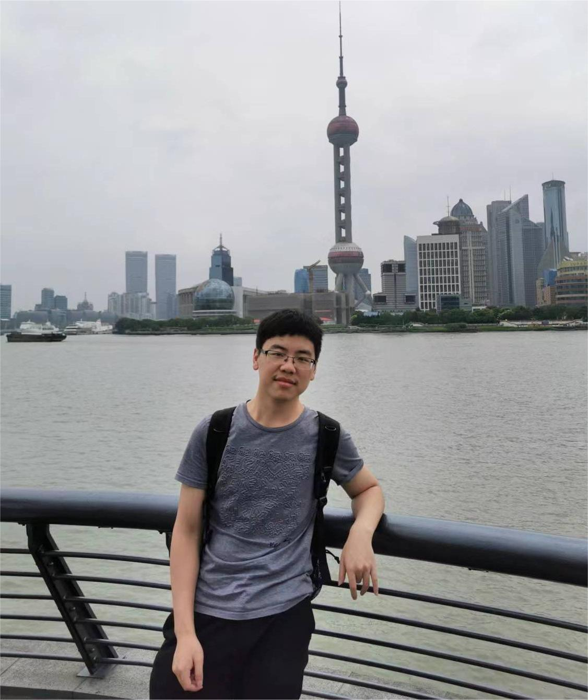

Introduction
Welcome! My name is Zou Chenxuanyin, and I am a graduate student in the State Key Laboratory of Synthetical Automation for Process Industries at Northeastern University in Liaoning province and will obtain my Master's degree in 2023. I am looking for a Ph.D. position.
My research interests focus on multiobjective optimization, semi-infinite programming, and optimal control. I am devoted to handling multiobjective optimization problems with inequality path constraints in non-linear dynamic systems. Furthermore, I have a broad knowledge of multiobjective methods. I am currently trying to incorporate parallel and distributed computation into my research to intensify the power of algorithms to solve large-scale and complicated problems and improve efficiency. Feel free to look at my research page to learn more!
Education
M.S. in Control Theory and Control Engineering, State Key Laboratory of Synthetical Automation for Process Industries (NEU), 2020-present.
B.S. in Automation, Northeastern University, 2016-2020
NOTE: This is a personal webpage and any views or information reflect solely the author.